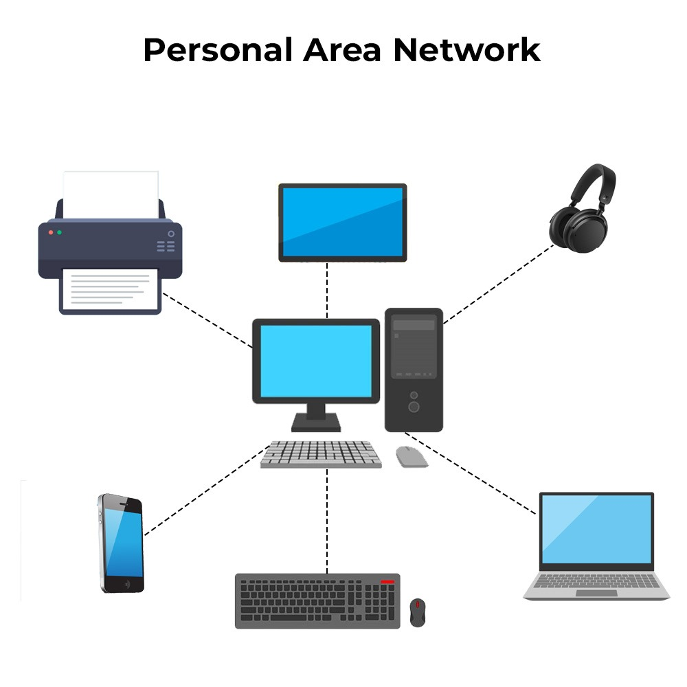

เครือข่ายส่วนบุคคล (Personal Area Network หรือ PAN)
เครือข่ายส่วนบุคคล (PAN) คือ เครือข่ายคอมพิวเตอร์ขนาดเล็กที่ออกแบบมาเพื่อการเชื่อมต่ออุปกรณ์อิเล็กทรอนิกส์ต่าง ๆ รอบตัวบุคคลในระยะใกล้ โดยทั่วไปมักครอบคลุมรัศมีประมาณ 1–10 เมตร เหมาะสำหรับการใช้งานส่วนบุคคล เช่น การเชื่อมต่อระหว่างสมาร์ตโฟน แล็ปท็อป แท็บเล็ต หูฟังไร้สาย เครื่องพิมพ์ หรืออุปกรณ์ IoT
